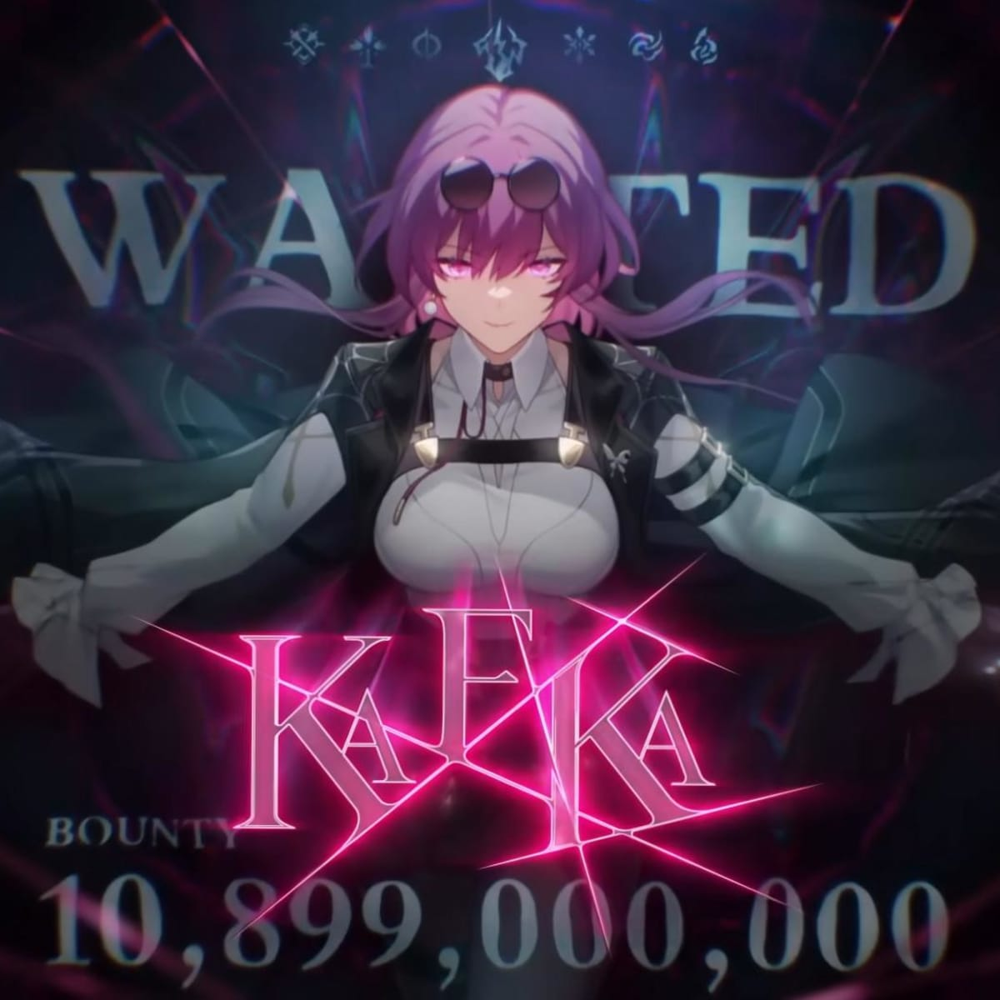

Honkai: Star Rail terá evento de carnaval em São Paulo
Fique ligado na AVN, grupo criador da Redmaker que realiza em porto alegre todo mês uma festa com temática de anime, este mês poderemos ter Genshin e Honkai na competição de cosplayers!
Duração: todo dia 25/mês atual
We Coffee
We Coffe de São Paulo anúncia menu temático dos Caçadores de Stellaron! junto de alguns brindes!